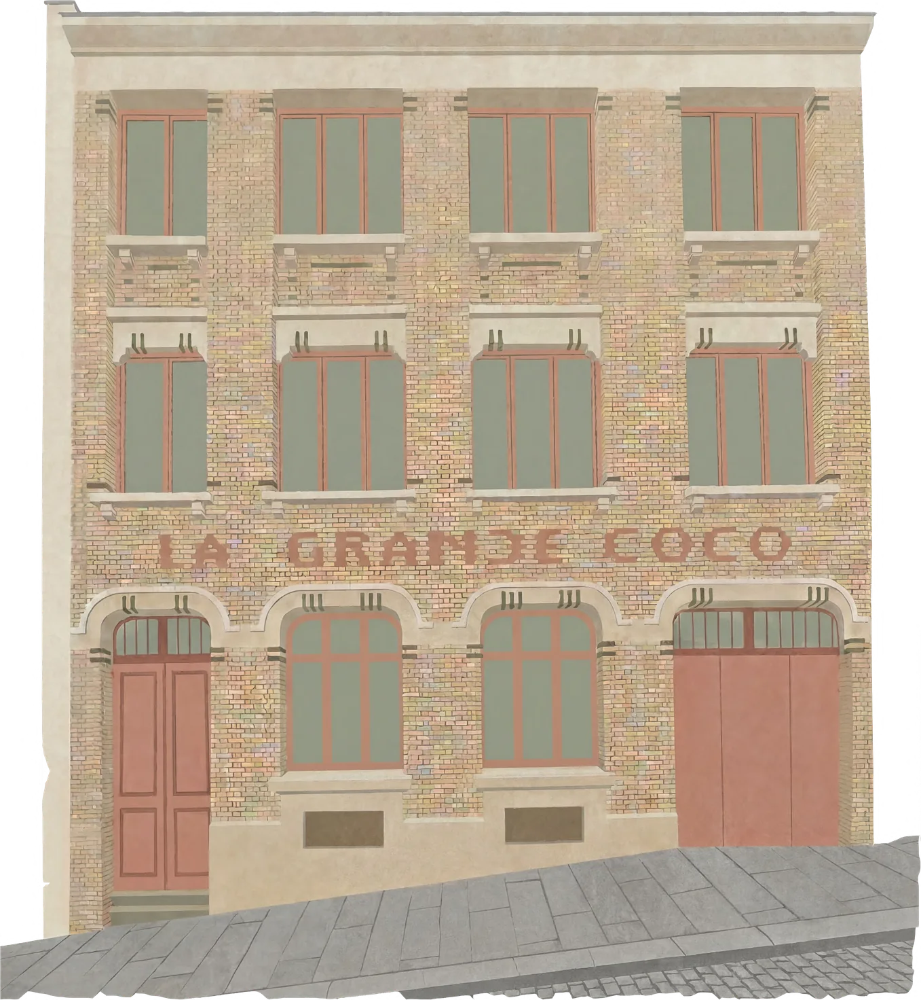
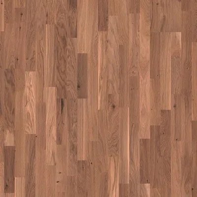
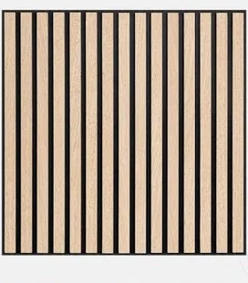
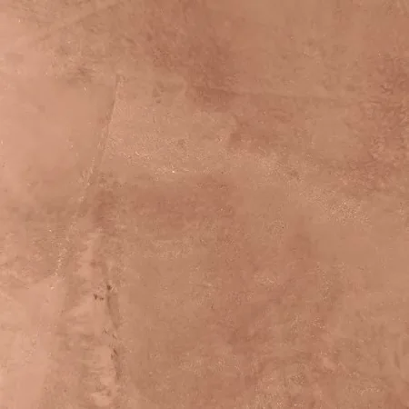
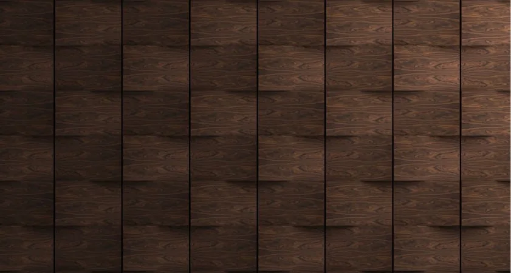
1.La Grande Coco
Réinventer l’habitat collectif autour de la pratique musicale.
La Grande Coco transforme un ancien immeuble parisien en un lieu de résidence et de création dédié aux groupes de musique.
Le projet s’organise autour de deux entités complémentaires : Coco Dodo, espace de vie et de création pour les artistes, et Coco Quartier, pensé comme un lieu plus ouvert sur le voisinage.
L’enjeu est de permettre aux groupes de vivre, travailler et répéter ensemble tout en maîtrisant les nuisances sonores. L’aménagement articule ainsi espaces privés et collectifs, lieux de répétition et espaces de repos, avec une attention particulière portée à l’acoustique, aux matériaux et aux usages.
Programme
- Habitat collectif
- Résidences musicales
- Salles de répétition
- Espaces communs
Enjeux
- Acoustique
- Vie collective
- Intimité
- Circulation
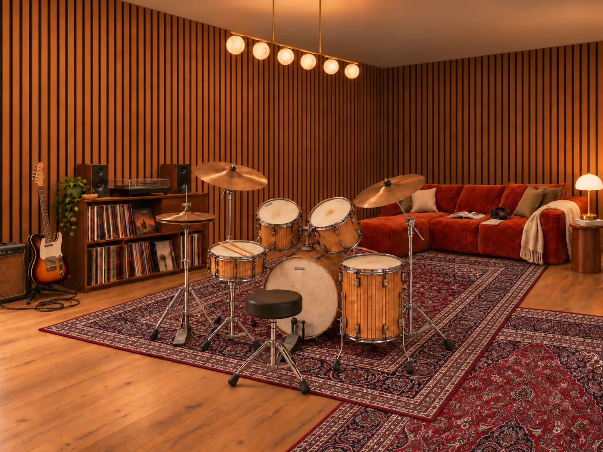
Coco Quartier
Espace ouvert · Musique · Partage
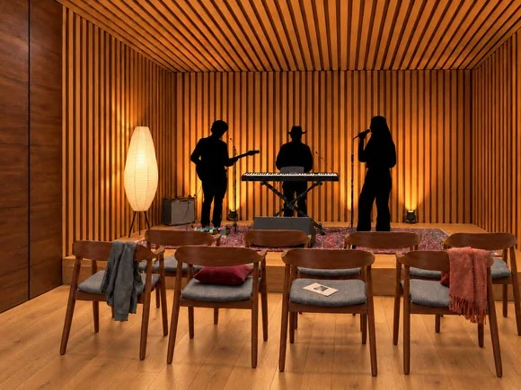
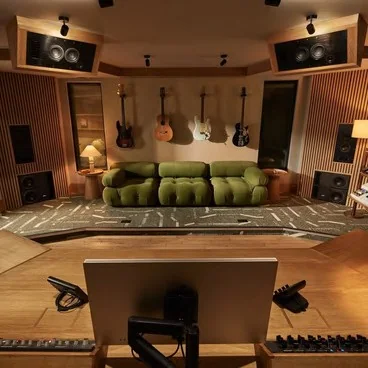
Moodboard
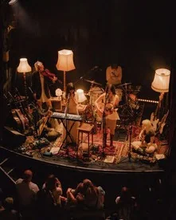
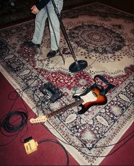
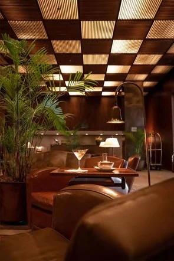
Pensé comme un espace créatif dédié à la pratique musicale, Coco Quartier offre aux groupes un lieu pour répéter, écrire et créer ensemble. Favorisant un environnement propice à l’expérimentation et aux échanges, tout en intégrant un espace permettant aux artistes de présenter leurs nouveaux morceaux devant un public choisi.
Palette
Éléments clés
- Qualité de captation
- Circulation & ergonomie
- Confort & concentration
- Transmission maîtrisée
- Matériel & personnes
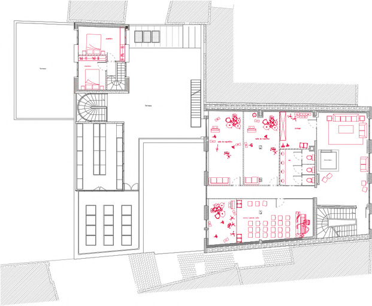
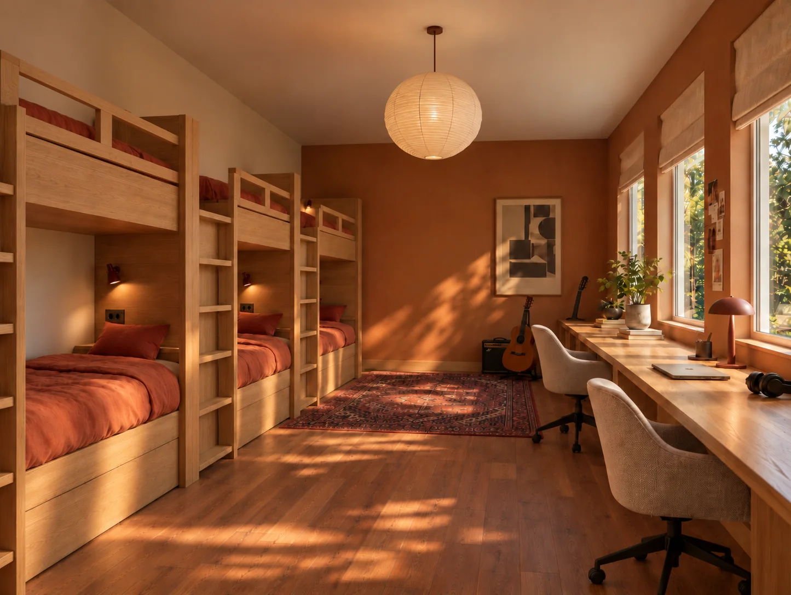
Coco Dodo
Habiter · Créer · Se retrouver
Coco Dodo constitue l’espace de vie des artistes. Les logements sont conçus pour offrir un équilibre entre intimité, confort et vie collective, avec des espaces adaptés au repos, au travail et aux moments partagés au quotidien.
Éléments clés
- Confort & calme
- Lisibilité & simplicité
- Vie collective fluide
- Image du lieu
Moodboard
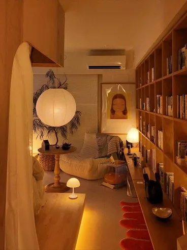
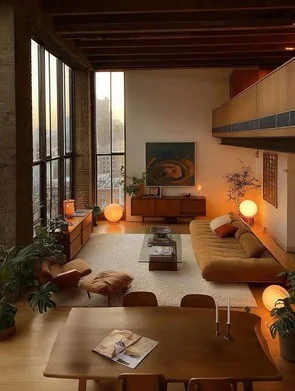
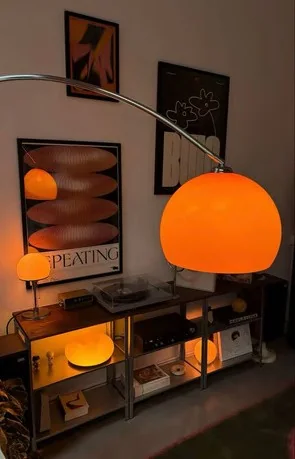
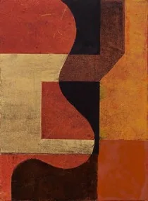
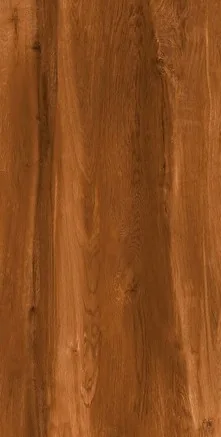
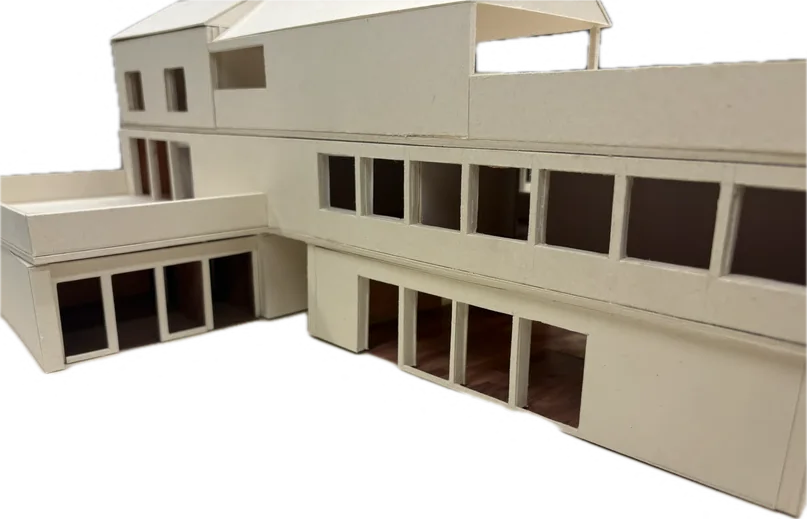
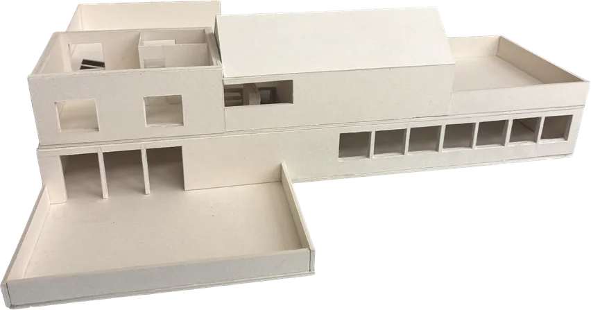
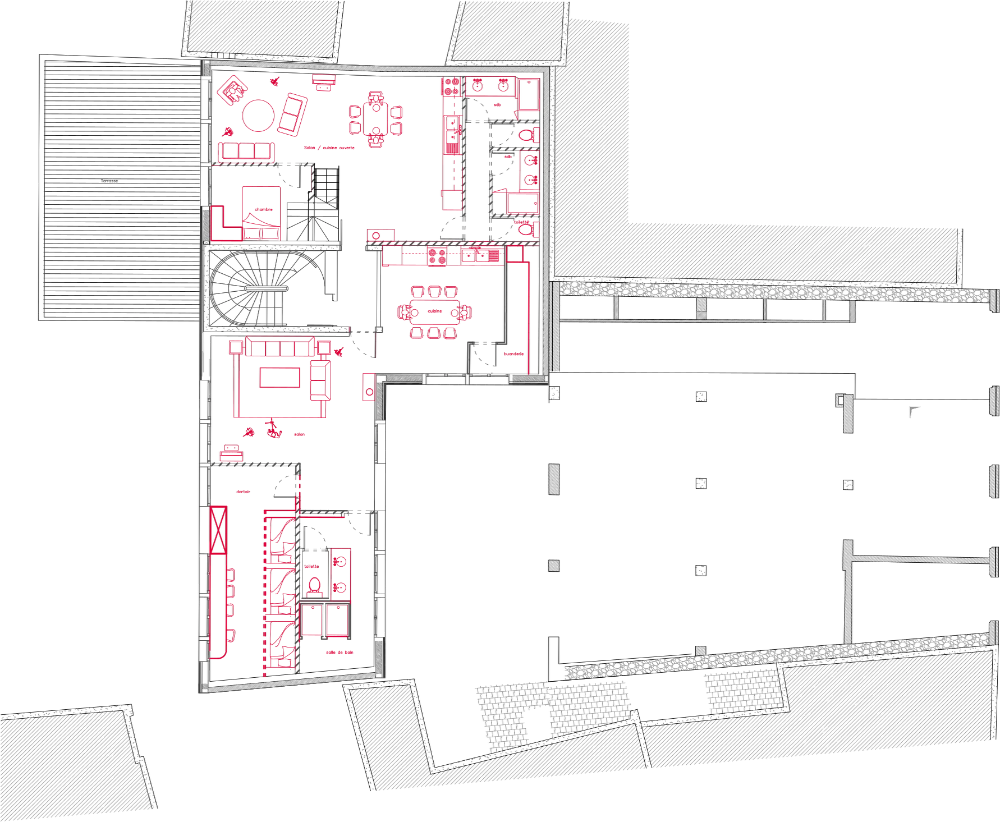